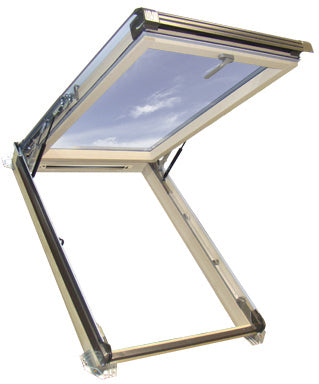
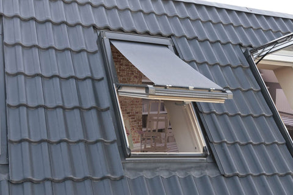
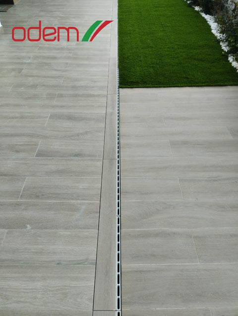
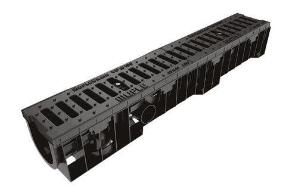
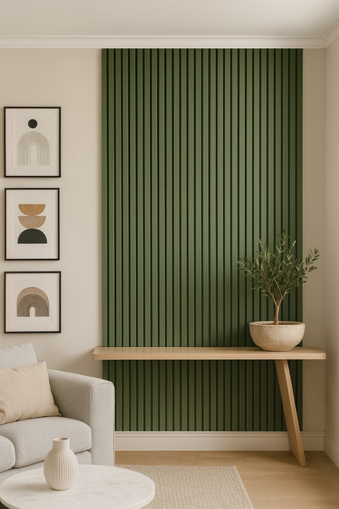
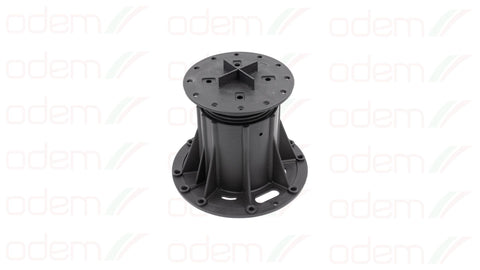
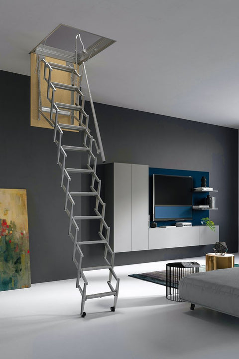
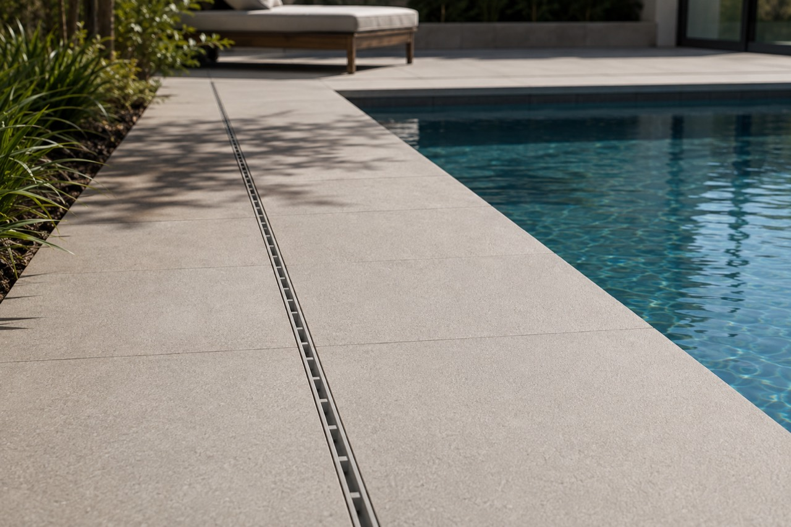

O cliente não sabe a referência
Quer painel acústico, mas não sabe qual dos seis ou sete, nem quantos metros. Quer montar 50 metros de drenagem e pergunta qual é o canal. Antes de orçamentar, é preciso descobrir o produto.
Chegam à Odem perto de 60 pedidos por dia, e uma boa parte fica para o fim do dia, ou para o dia seguinte. Esta página mostra a plataforma que lê cada pedido, pergunta ao cliente o que falta, encontra a referência certa nas vossas 1.603 e deixa o orçamento pronto para validar, ligado ao HubSpot.
"Tenho uma obra, preciso de duas janelas sótão 78."
"50 metros de canal, 20 de largura, para a entrada da garagem"
"painel acústico preto, parede de 3,2 por 2,5. quantos preciso?"

Janela VSK 78 × 118J-VSK781182 ×
Toldo exterior AMWJ-AMW781182 ×Quer painel acústico, mas não sabe qual dos seis ou sete, nem quantos metros. Quer montar 50 metros de drenagem e pergunta qual é o canal. Antes de orçamentar, é preciso descobrir o produto.
15 a 20 pedidos qualificados por dia, entre o Bruno e a Adriana, com regras que mudam entre o particular que compra uma unidade e a construtora que compra 10.000.
Cerca de 40 por dia: "preciso de uma janela", "preciso de um orçamento". Só metade tem resposta, quase sempre por telefone. Pela vossa estimativa, são 3.500 a 4.000 € por mês que ficam por vender.
Na construção não há stock planeado. O comprador recebe o "preciso disto para amanhã" da frente de obra, manda o pedido a vários fornecedores e fica com quem responde primeiro.
"Nos últimos cinco anos crescemos uma média de 25% ao ano. Já estamos naquele limite do afogamento."
Bruno Lobo, 12 de outubro de 2026
O problema não é falta de procura. É o tempo entre o pedido e o orçamento.
Os números são os que nos deu na reunião. Os verdes têm resposta no próprio dia; os cinzentos ficam para trás, ou chegam tarde de mais.
427 produtos e 1.603 referências, com medida e preço. É sobre isto que o agente trabalha, e é por isto que um pedido de "duas janelas 78" ainda precisa de três perguntas antes de ser um orçamento.
J-VSK78118
LW-DK1010-1
MU150100C250
DEWVR
GB-K-A2-NEW
5922E
Coleções do site odem.pt a 3 de novembro de 2026. Um produto pode estar em mais do que uma coleção.
MU150100C250passam carros: C250, não o TOP A15DEW09BL27o Preto liso só existe em 2,40 mGB-K-A2-NEWregula de 52 a 82 mmUma regra que encontrámos nas vossas referências. Nas janelas de sótão, a referência diz o modelo e a medida:
O agente lê isto nos dois sentidos: da referência para a medida, e da medida que o cliente diz para a referência.
É assim que a plataforma se vê numa quarta-feira às 10h45, do lado da Adriana. Clique à vontade: tudo funciona, com produtos e preços do vosso site. Três sítios por onde começar:
Formulários do HubSpot, email da loja, email geral e WhatsApp numa lista, com a prioridade de cada um. O "para amanhã" sobe ao topo sozinho.
Escalões por tipo de cliente, limites para aprovação do Bruno, o que sai sozinho e o que espera. A regra muda num sítio e aplica-se em todos.
Cada assunção fica escrita na linha do orçamento. Cada exceção tem o motivo. O registo de atividade mostra tudo o que o agente fez, linha a linha.
À esquerda a conversa, à direita o que o agente está a pensar em cada passo. O primeiro cenário é às 18:42, quando já não está ninguém no escritório. O último é o que correu mal com o agente que tiveram há um ano e meio.
Produtos, referências, medidas e preços sem IVA do vosso site. Nomes de clientes e conversas são ilustrativos: o agente usa sempre a vossa tabela real.
Os formulários do site já entram pelo HubSpot, e é lá que fazem o seguimento. A plataforma lê e escreve pela API oficial do HubSpot: o que muda num lado aparece no outro.
O cliente é reconhecido pelo email ou pelo número. Se for novo, o agente cria o contacto com a origem do pedido.
Cada orçamento é um negócio, com o valor, o PDF e a fase: pronto, enviado, ganho ou perdido, com o motivo.
O orçamento enviado sem resposta gera a tarefa de seguimento, como fazem hoje, mas sem ninguém se ter de lembrar.
É como fazemos na maior parte dos clientes. Se preferirem, a plataforma pode trabalhar sobre o vosso servidor interno: basta termos acesso para ler a informação.
Os agentes usam a API empresarial da OpenAI, que não usa os dados enviados para treinar modelos e os elimina ao fim de 30 dias, dentro das regras do RGPD.
Antes de chegar à IA, os dados passam por um passo automático que troca o cliente por um código. O agente faz o orçamento sem saber para quem é.
Cliente 0417A anonimização torna a arquitetura mais complexa e só se justifica quando a administração a quiser. Fica decidido na primeira semana.
Na reunião, o Bruno lembrou que parte dos pedidos do email geral vai para os colegas que contactam gabinetes de projeto, arquitetura e obras. Com a mesma qualificação, chegam-lhes já com a referência e o artigo: "o online começa, e depois o resto".
Não faz parte desta proposta. A plataforma fica preparada para isso: cada pedido já tem a origem e o cliente.
Os pedidos por dia e os minutos de hoje são vossos. Os minutos com a plataforma são uma suposição nossa: mexa nos valores.
Orçamentos de produto por medida que levavam 15 a 30 minutos a montar à mão, com clientes profissionais que queriam resposta no próprio dia. O cliente pede pelo WhatsApp, o agente pergunta o que falta e calcula com as regras da empresa; os casos fora do normal vão para uma pessoa, e cada orçamento fica registado.
Estado: em fase de testes com o cliente.
Pedidos de orçamento em três línguas, com fotografias e áudios. O agente recebe, lista o que há para transportar, calcula com as regras da empresa e envia o orçamento em PDF ao cliente e à equipa, com referência própria.
Estado: em produção, aberto ao público.
A HCO Cosméticos tem mais de 2.000 produtos com variações muito parecidas, e também achava que sim. Um minuto de vídeo:
Ver o caso da HCOPor respeito aos contratos, não identificamos os clientes dos dois primeiros casos.
Pela vossa estimativa, os pedidos que hoje ficam por responder valem 3.500 a 4.000 € de faturação por mês. A implementação completa equivale a cerca de três meses dessa faturação, e as horas devolvidas à Adriana e ao Bruno vêm por cima.
Arrancando em novembro, a plataforma fica a funcionar no início de 2027, como pediu. Os prazos contam a partir da receção dos exemplos de orçamentos e dos acessos.
Exemplos de orçamentos do pedido ao fim, regras de preço e escalões, acesso ao HubSpot e à base de artigos e preços.
Pedidos, quadro, editor de orçamentos, regras e ligação ao HubSpot.
Qualificação e orçamentação ligadas aos canais. Primeiro só a preparar, sem responder a ninguém.
Pedidos reais, ajustes com a equipa, e o envio ligado só quando estiverem satisfeitos.
Nada entra em produção sem o vosso ok. Se as respostas de um dos lados demorarem semanas em vez de dias, o prazo passa a 3 meses.
Três passos até à primeira semana de trabalho. Nada arranca sem confirmação por escrito.
Por WhatsApp ou por email, com as dúvidas que ainda tenham.
O contrato, com o âmbito, os valores e o prazo desta página.
Os exemplos de orçamentos, as regras de preço e o acesso ao HubSpot e à base de artigos.
Manuel Condeço, AI Solutions
+351 964 251 889 ou manuel.condeco@aisolutions.pt